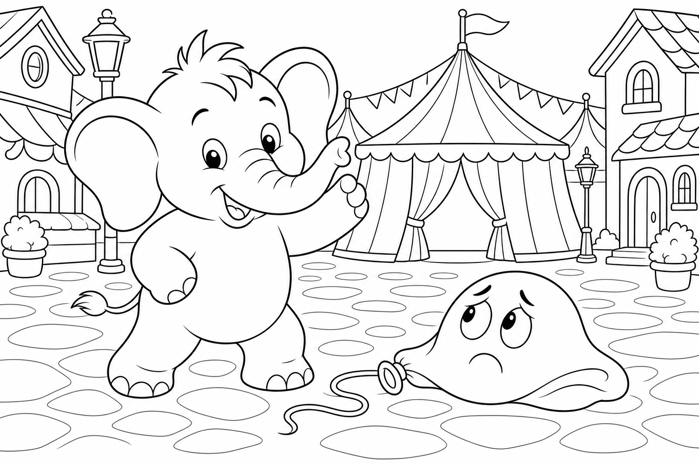

Cerca questa immagine in fondo al libro per colorarla come preferisci. Ricorda: il palloncino rosso gonfio e il biglietto dorato della prima fila.
C'era una volta un Elefante di nome Franco, che gli amici chiamavano ... EleFranco. Di cognome faceva Franchini. Abitava nella sua accogliente casa nel paesino di FrancaVilla, che quella settimana aveva trasformato la piazza centrale in un villaggio circense: tende a strisce rosse e gialle, funi tese tra i lampioni, profumo di zucchero filato nell'aria e un cartello gigante che annunciava «Stasera — Spettacolo Meraviglioso!».
Era un pomeriggio luminoso e EleFranco non vedeva l'ora: «Devo comprare il biglietto per lo spettacolo prima che finiscano i posti in prima fila! Ho sentito che c'è un acrobata che cammina sulla corda tesa come se fosse un sentiero di nuvole.» Controllò il portafoglio: tutto in ordine. «Andiamo!»
Si infilò le sue ciabatte giganti a pois colorati, perfette per una festa, e uscì verso la piazza. Il selciato tremava di eccitazione: THUMP THUMP THUMP Arrivato davanti alla biglietteria, notò una macchia rossa sul prato — piatta, triste, quasi invisibile. Si chinò e sentì una vocina sottile: «EleFranco... sono io, Pippo. Pippo il Palloncino.»
Era un palloncino rosso dal sorriso dipinto, ma completamente sgonfio, steso sull'erba come un fiore appassito. «Stanotte il vento mi ha abbracciato troppo forte,» sospirò. «Ho perso aria. Domani devo salutare i bambini dall'alto, prima dello spettacolo, ma così sono solo un pezzo di gomma triste.»
EleFranco guardò Pippo. Poi guardò la fila alla biglietteria. Poi di nuovo il palloncino sgonfio. «Non ti preoccupare, Pippo.
Ti ridiamo il volo.» Ma mentre preparava il soffio, la mente cominciò a vagare: dove avrebbe seduto in prima fila? Avrebbe condiviso i popcorn? E se l'acrobata facesse una capriola proprio sopra di lui?
Stava quasi per soffiare senza pensare quando Pippo gemette: «EleFranco, sento che mi stai dimenticando lì sul prato!» Allora l'elefante scosse le grandi orecchie e disse ad alta voce la sua parola magica: "FOCUS!"«Piano, Pippo. Un soffio gentile alla volta.» Si inginocchiò, chiuse gli occhi e soffiò con cura nella valvoletta del palloncino.
Pippo cominciò a gonfiarsi, rosso e lucido, ma EleFranco, entusiasta, non si fermò in tempo. Il soffio divenne un vento generoso — troppo generoso. EleFranco arrossì fino alle orecchie, il ciuffo nero si rizzò a punta come se avesse visto un fantasma, e Pippo balzò verso l'alto oscillando come un pallone impazzito legato a un filo invisibile. «Whee!» gridò Pippo, poi «Aaaah!» mentre zigzagava tra i lampioni.
«Ops,» fece EleFranco, ansimando. «Sembro un peperone gigante.» Proprio in quel momento, la macchina dei popcorn accanto alla biglietteria sputò una nuvola d'aria calda e profumata di burro. La corrente dolce incontrò Pippo a mezz'aria: il palloncino si gonfiò alla perfezione, rotondo e splendente, e una brezza lo sollevò ancora più in alto.
Da lassù, qualcosa di dorato scivolò lungo il filo del vento e atterrò sulla proboscide di EleFranco: un biglietto d'oro con scritto «Prima fila — Ospite d'onore». Il direttore del circo, un gatto dal cilindro elegante, rise dal palco. «Per l'elefante che ha ridato il cielo a Pippo!» Pippo scese danzando, lucido e felice.
«Grazie, EleFranco. Il tuo soffio era forte, ma il tuo cuore era giusto.» La missione era compiuta: biglietto in mano, palloncino in volo, spettacolo assicurato.
EleFranco capì allora la morale di quella giornata: Anche i piccoli possono rialzarsi con un soffio d'incoraggiamento. 🎈
EleFranco guardò il cielo colorato della tenda e scoppiò nella sua famosa risata: OH... OH... OH...